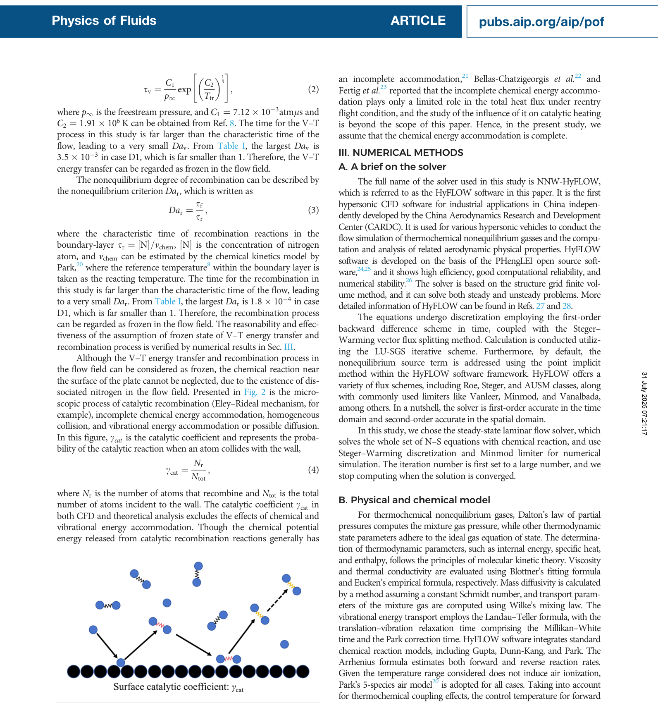
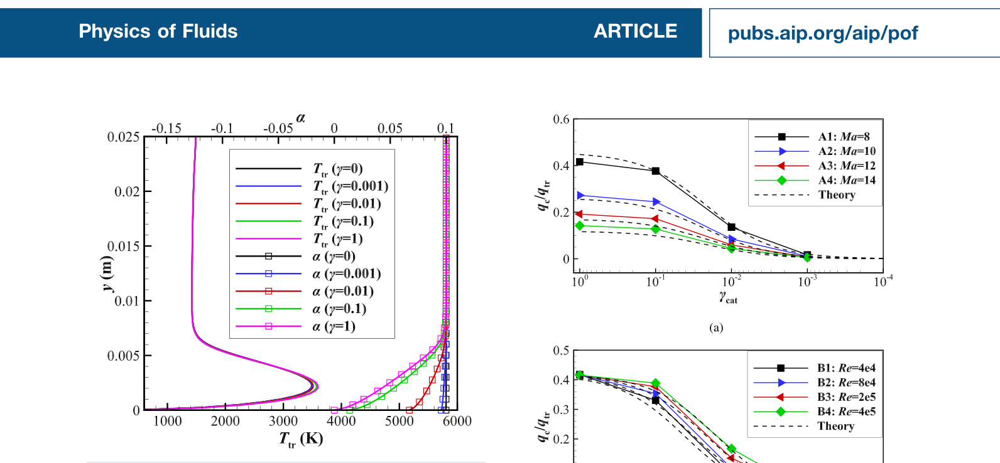
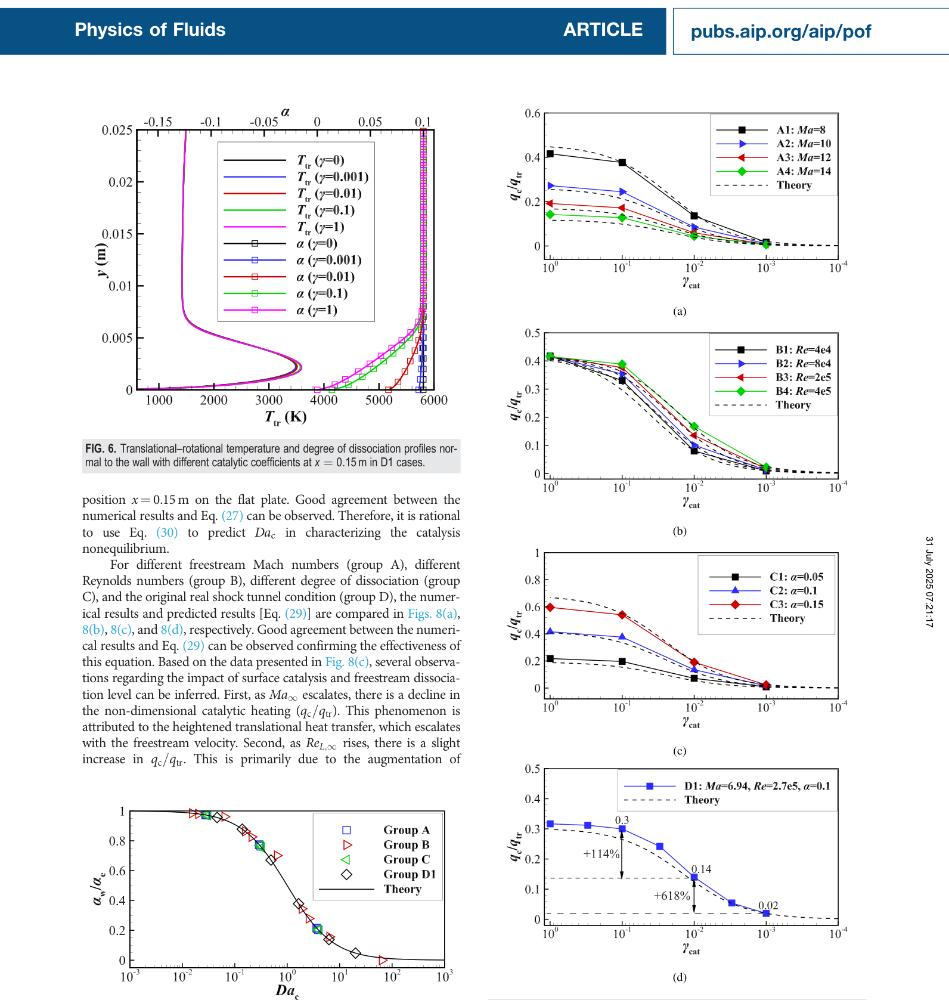
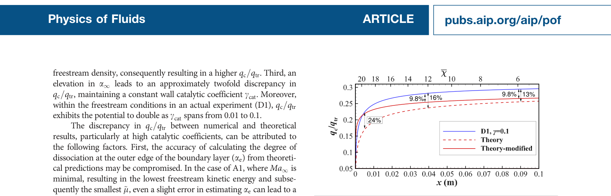

01中文摘要
在高焓激波风洞中，高温驻室气体经快速膨胀加速，流动特征时间与热化学过程时间相当，试验段处于热化学非平衡状态；由于壁面催化不完全，模型表面的复合反应也处于非平衡。因此，激波风洞气动热测量必须考虑化学非平衡和有限速率催化的影响。本文采用 CFD 研究高焓来流下部分离解氮气对平板的传热，基于微观分析引入表征催化反应非平衡程度的 Damköhler 数，推导不同于量热完全气体的壁面催化非平衡热流预测公式，并修正前缘粘性干扰的影响，为化学非平衡流动的天地换算方法提供依据。
原始摘要（英文/原文）
In the high-enthalpy shock tunnel experiments, the expansion flow starting from the high-temperature chamber accelerates drastically and rapidly. The flow exists in a state of thermochemical nonequilibrium for the characteristic time of the flow is relatively short compared with that of thermochemical processes. Because of the incomplete wall catalysis, the recombination reactions on the model surface are also in nonequilibrium. As a result, the effects of chemical nonequilibrium on aeroheating measurements should be taken into account in shock tunnel experiments. In the present investigation, computational fluid dynamics is employed to study the effect of chemical nonequilibrium and the finite-rate catalytic wall on heat flux to a flat plate under high-enthalpy shock tunnel conditions. Based on the microscopic analysis, a Damk€ohler number characterizing the nonequilibrium degree of catalytic reactions is introduced. Also, a formula is derived to further predict the wall catalysis nonequilibrium effect on the heat flux, which is distinctive from those described by the calorically perfect gas model. The theoretical result is further modified to consider viscous interaction at the leading edge of the flat plate. These results are useful for the establishment of a ground-to-flight extrapolation methodology for the chemical nonequilibrium flows.
02阅读说明
文章类型：理论推导 + CFD（HyFLOW）研究，面向高焓激波风洞部分离解氮来流的平板有限速率催化传热。材料范围：PDF 共 10 页，bundle 全文完整（含表 I、表 II、参考文献）；式 (9)–(31) 经原 PDF 第6–7页（刊页 36,096120-5/6）与第9页（刊页 36,096120-8）核对，式 (8) 文本层严重错位，只能按上下文描述。图表可读性：图1、图2、图4 为示意图，可读；图3、图5–图9 为曲线/云图，坐标轴与图例可读，但具体数据点不可读，定量结论仅依据正文描述与表 I。信息完整度较高；表 I 的 12 组工况完整。 文章类型：期刊
03一句话核心与三句话摘要
部分离解氮来流下平板有限速率催化传热可用催化Damköhler数Da_c归一，并给出含黏性干扰修正的显式预测式。
- 高焓激波风洞中，来流处于热化学非平衡、壁面催化不完全，催化热可占总热流很大比例（N2 中通常 >15%），但既有平板理论多基于量热完全气体或需数值求解，且未计前缘黏性干扰。 AI概括
- 作者证明 V–T 松弛与气相复合在本文工况下冻结（Da_v≤3.5×10^-3、Da_r≤1.8×10^-4），用 Lees-Dorodnitsyn 变换求得含有限速率催化边界条件的自相似解，引入 Da_c 并导出 qc/qtr=Le^-0.6[α∞/(μ̃−α∞)]Da_c/(1+Da_c)，再用 HyFLOW 对 A–D 四组共 12 个工况验证。 AI概括
- 预测式与 CFD 在壁面离解度（图7）和非量纲催化热（图8）上吻合；引入黏性干扰修正 χ 后前缘预测明显改善（图9），但下游仍有偏差。 AI概括
04核心内容清单
| 要点 | 类型 | 重要性 | 原文依据 | 属性 |
|---|---|---|---|---|
| 指出高焓激波风洞来流处于热化学非平衡，壁面催化不完全，催化热可占总热流 >15%（N2）乃至 20%–40%（空气），必须计入化学非平衡。 | 问题背景 | A | p2，第1节 | 原文明确 |
| 证明本文工况下 V–T 松弛与气相复合均可视为冻结：Da_v≤3.5×10^-3、Da_r≤1.8×10^-4，且图6 显示温度剖面对 ccat 不敏感。 | 假设验证 | A | p4、p6–7，表I、图6 | 原文明确 |
| 含有限速率催化边界条件的可压缩平板边界层方程存在自相似解，可用 Lees-Dorodnitsyn 变换化为常微分方程组。 | 理论 | A | p6，式(15)–(18) | 原文明确 |
| 引入催化 Damköhler 数 Da_c，并得到 αw/αe=1/(1+Da_c)，把壁面催化非平衡程度压缩为单一无量纲参数。 | 理论 | A | p7，式(27)–(28) | 原文明确 |
| 导出 qc/qtr=Le^-0.6[α∞/(μ̃−α∞)]Da_c/(1+Da_c)，其中 Le=0.6、μ̃=E∞/Ed≈V∞²/(2Rhd)。 | 理论 | A | p7，式(24)、(29) | 原文明确 |
| 式(27) 对壁面离解度的预测与 CFD 在 x=0.15 m 处吻合，说明用式(30) 的 Da_c 表征催化非平衡是合理的。 | 验证 | A | p8，图7 | 原文明确 |
| 式(29) 对 Ma、Re、α∞ 与真实实验来流四组工况均与 CFD 吻合，验证了预测式的适用性。 | 验证 | A | p8，图8(a–d) | 原文明确 |
| qc/qtr 随 Ma∞ 增大而下降、随 ReL,∞ 增大而略升、随 α∞ 升高约翻倍；D1 中 ccat 由 0.01 增至 0.1 可使 qc/qtr 翻倍。 | 参数规律 | A | p8–9 | 原文明确 |
| 黏性干扰修正 χ 使前缘预测显著改善；χ>3 表示强黏性干扰；x 增大后修正理论偏差增大，χ→1 时退化为原理论。 | 修正模型 | A | p8–9，式(30)–(31)、图9 | 原文明确 |
| 高 ccat 偏差主要来自 αe 与 Da_c 的估算：超催化壁下 Da_c 应按理论趋于无穷，但式(30) 只给有限值；A4、B1 可能受稀薄效应影响。 | 误差分析 | B | p9 | 原文明确 |
| 公式不依赖对实验参数的直接拟合，作者据此主张其外推通用性；但 300 K 不锈钢 ccat 可在 0.0007–0.07 变化，仍带来实验不确定性。 | 适用性 | B | p8–9 | 原文明确 |
05引言：研究问题与领域缺口
【原文明确】高焓激波风洞反射激波运行产生高温气体，喷管膨胀使流动在热化学非平衡状态（平动/转动温度低、振动温度高、气体部分离解），因此高超声速流动与气动加热受真实气体效应强烈影响（p2）。【原文明确】壁面催化复合放出的化学势能会显著增加热流：MacLean & Holden 报告 N2 中催化热通常超过总热流 15%、空气中 20%–40%、CO2 中极端情况下超过 50%；Yang et al. 在铜涂层表面测得相对二氧化硅涂层最高 61% 的热流升高（p2）。【原文明确】缺口：非平衡流通常只能数值求解，“obtaining a theoretical solution seems to be impossible”；既有平板理论（Van Driest、Yu et al.、Chung & Anderson、Vidal）或需数值辅助，或未计入对平板前缘至关重要的黏性干扰（p2–3）。【原文明确】目标：在“流场无化学反应、壁面有限速率催化”的假设下，给出部分离解氮来流平板边界层的理论解与热流预测式，并考虑黏性干扰（p2–3）。
06流动条件与几何构型
| 项目 | 数值/描述 | 依据 | 备注 |
|---|---|---|---|
| 平板长度 L0 | 0.2 m（按真实激波风洞模型尺寸） | p3，第II.A节 | 尖前缘、零攻角平板（图1） |
| A1 来流条件 | Ma∞=8；ReL,∞=2×10^5 m^-1；Ttr,∞=800 K；Tv,∞=4700 K；α∞=10%；ccat=0–1；Da_v=8.0×10^-5；Da_r=3.6×10^-5 | p3，表I | ReL,∞ 按文中定义为单位雷诺数 ρ∞u∞/μ∞（表头单位 10^5 m^-1） |
| A2 来流条件 | Ma∞=10；ReL,∞=2×10^5 m^-1；Ttr,∞=800 K；Tv,∞=4700 K；α∞=10%；ccat=0–1；Da_v=5.1×10^-5；Da_r=1.8×10^-5 | p3，表I | 与 A1 仅 Ma 不同 |
| A3 来流条件 | Ma∞=12；ReL,∞=2×10^5 m^-1；Ttr,∞=800 K；Tv,∞=4700 K；α∞=10%；ccat=0–1；Da_v=3.5×10^-5；Da_r=1.1×10^-5 | p3，表I | 与 A1 仅 Ma 不同 |
| A4 来流条件 | Ma∞=14；ReL,∞=2×10^5 m^-1；Ttr,∞=800 K；Tv,∞=4700 K；α∞=10%；ccat=0–1；Da_v=2.6×10^-5；Da_r=6.7×10^-6 | p3，表I | 作者称该工况可能受稀薄效应影响（p9） |
| B1 来流条件 | Ma∞=8；ReL,∞=0.4×10^5 m^-1；Ttr,∞=800 K；Tv,∞=4700 K；α∞=10%；ccat=0–1；Da_v=1.6×10^-5；Da_r=1.4×10^-6 | p3，表I | 低 Re 端；作者称可能受稀薄效应影响（p9） |
| B2 来流条件 | Ma∞=8；ReL,∞=0.8×10^5 m^-1；Ttr,∞=800 K；Tv,∞=4700 K；α∞=10%；ccat=0–1；Da_v=3.2×10^-5；Da_r=5.7×10^-6 | p3，表I | 与 B1 仅 Re 不同 |
| B3 来流条件 | Ma∞=8；ReL,∞=2×10^5 m^-1；Ttr,∞=800 K；Tv,∞=4700 K；α∞=10%；ccat=0–1；Da_v=8.0×10^-5；Da_r=3.6×10^-5 | p3，表I | 与 A1 条件相同 |
| B4 来流条件 | Ma∞=8；ReL,∞=4×10^5 m^-1；Ttr,∞=800 K；Tv,∞=4700 K；α∞=10%；ccat=0–1；Da_v=1.6×10^-4；Da_r=1.4×10^-4 | p3，表I | 高 Re 端 |
| C1 来流条件 | Ma∞=8；ReL,∞=2×10^5 m^-1；Ttr,∞=800 K；Tv,∞=4400 K；α∞=5%；ccat=0–1；Da_v=8.0×10^-5；Da_r=3.6×10^-5 | p3，表I | 低离解度、低振动温度 |
| C2 来流条件 | Ma∞=8；ReL,∞=2×10^5 m^-1；Ttr,∞=800 K；Tv,∞=4700 K；α∞=10%；ccat=0–1；Da_v=8.0×10^-5；Da_r=3.6×10^-5 | p3，表I | 与 A1 条件相同 |
| C3 来流条件 | Ma∞=8；ReL,∞=2×10^5 m^-1；Ttr,∞=800 K；Tv,∞=5000 K；α∞=15%；ccat=0–1；Da_v=8.0×10^-5；Da_r=3.6×10^-5 | p3，表I | 高离解度、高振动温度 |
| D1 来流条件（真实实验） | Ma∞=6.94；ReL,∞=2.7×10^5 m^-1；Ttr,∞=1342 K；Tv,∞=4715 K；α∞=10%；ccat=0–1（另加 0.003、0.03、0.3）；Da_v=3.5×10^-3；Da_r=1.8×10^-4 | p3，表I；p3 正文 | 对应 Ref. 17 的实验条件 |
| 壁面温度 Tw | 主工况文中未提及；采用冷壁假设 Tw≪Te。验证算例 Tw=300 K | p5、p6；表II（p5） | 实验运行时间极短，壁温近似不变（p5） |
| 壁面催化系数 ccat | 0、0.001、0.01、0.1、1（A–C 组）；D1 另加 0.003、0.03、0.3 | p3，第II.A节 | ccat 定义为 Nr/Ntot，不含化学与振动能量适应效应 |
| 气体与化学模型 | 氮来流；Park 5 组分空气模型；双温度模型；无电离 | p2、p4 | 虽为氮来流，作者对全部算例采用 Park 5 组分空气模型 |
| 来流湍流度/噪声 | 文中未提及 | 全文 | 采用定常层流求解器；边界层状态为层流（Re 范围 10^4–10^5） |
| 单位雷诺数参考长度 | ReL,∞ 以 1 m 为单位（10^5 m^-1）；平板 Re_L 由 L0=0.2 m 换算 | p3，表I 表头 | 文中称 ReL,∞ 为 unit Reynolds number |
07核心现象与关键参数
| 参数 | 定义 | 数值 | 关系/说明 | 依据 |
|---|---|---|---|---|
| Da_v | 振动–平动能量传递的非平衡判据，Da_v=τf/τv，τf=L0/u∞，τv 由 Landau–Teller 模型估计 | A1 8.0×10^-5 … D1 3.5×10^-3（均≪1） | Da_v≪1 ⇒ V–T 传递可视为冻结 | p3–4，式(1)–(2)；表I |
| Da_r | 边界层内复合反应的非平衡判据，Da_r=τf/τr，τr=[N]/vchem | A1 3.6×10^-5 … D1 1.8×10^-4（均≪1） | Da_r≪1 ⇒ 气相复合可视为冻结 | p3–4，式(3)；表I |
| Da_c | 壁面异相催化反应的非平衡 Damköhler 数（流场特征时间与壁面反应特征时间之比） | ccat=0 → 0；ccat→1 时按式(28)/(30) 为有限值（理论上应→∞） | 与 ccat 成正比；控制 αw/αe 与 qc/qtr | p7，式(28)；p8–9，式(30) |
| αw/αe | 壁面离解度与边界层外缘离解度之比 | =1/(1+Da_c) | Da_c→0 时→1（冻结）；Da_c→∞ 时→0（平衡） | p7，式(27) |
| qc/qtr | 催化热流与平动–转动热流之比 | =Le^-0.6[α∞/(μ̃−α∞)]Da_c/(1+Da_c) | 正比于 α∞ 与 Da_c/(1+Da_c) | p7，式(29) |
| μ̃ | μ̃=E∞/Ed≈V∞²/(2Rhd)，Ed=ρ∞V∞Rhd 为氮的离解能 | 随 Ma 增大而增大；文中未给具体数值 | 出现在式(24)、(29) 的分母 | p7 |
| Le | Lewis 数，Stc/Sttr=(Pr/Sc)^-0.6=Le^-0.6 | 取 0.6（文献推荐值） | 决定 qc 与 qtr 的输运类比 | p7 |
| hd | 氮的特征离解温度 | hd=101325 K | Ed=ρ∞V∞Rhd | p7 |
| χ | 黏性干扰修正参数，χ=√(pw/p∞) | 式(31) 给出；文中示例区域 χ>3 表示强黏性干扰 | 以 χ 乘式(28) 得式(30) | p8–9，式(31) |
| 壁面单元雷诺数 | 壁面第一层网格的单元雷诺数 | <1（要求 <3）；首层法向尺度 10^-6 m | 保证壁面热流计算精度 | p5 |
08方法与数据
【原文明确】几何：长 L0=0.2 m 的尖前缘平板，按真实激波风洞模型尺寸选取（p3，图1）。【原文明确】工况：四组共 12 个算例（A1–A4 变 Ma、B1–B4 变单位 Re、C1–C3 变离解度、D1 为真实实验来流），每组 ccat 依次取 0、0.001、0.01、0.1、1，D1 另加 0.003、0.03、0.3（p3，表I）。【原文明确】求解器：NNW-HyFLOW（基于 PHengLEI），结构网格有限体积，可解定常/非定常；时间一阶后向差分、Steger–Warming 通量分裂、LU-SGS 迭代、非平衡源项点隐处理；空间二阶；本文用定常层流 N–S + 化学反应，Minmod 限制器（p4）。【原文明确】物理模型：Dalton 分压 + 理想气体状态方程；Blottner 黏性拟合、Eucken 热导率、常数 Schmidt 数扩散、Wilke 混合律；Landau–Teller 振动松弛，Millikan–White 时间加 Park 修正；Park 5 组分空气模型（所有算例），Park 振动–离解耦合控制温度 Tc=TatrTv^(1−a)，a=0.6（p4–5）。【原文明确】壁面催化：反应速率 kw=ccat√(RTw/(2πMr))，由壁面质量守恒 −ρD(∂c/∂n)=kwρwcw 确定组分质量分数（p5，式6–7）。【原文明确】网格：前缘与壁面加密，首层法向尺度 10^-6 m 使壁面单元 Re<1（要求 <3）；网格无关性用 D1 的 120×140、200×200、300×300 三套，催化热与平动–转动热几乎不变，取中等网格（p5，图5）。【原文明确】验证：Run 77 圆柱算例（Ma=17.9、Re=3.4×10^5 m^-1、Ttr=156 K、Tw=300 K、空气）与实验及 DPLR 结果吻合（p5，表II、图3）。
| 项目 | 内容 | 依据 | 备注 |
|---|---|---|---|
| 求解器 | NNW-HyFLOW（基于 PHengLEI），结构网格有限体积，可解定常/非定常 | p4，第III.A节 | CARDC 自主开发的高超声速 CFD 软件 |
| 离散格式 | 时间一阶后向差分；Steger–Warming 矢量通量分裂；LU-SGS 迭代；非平衡源项点隐；空间二阶；Minmod 限制器 | p4 | 本文选 Roe/Steger/AUSM 中的 Steger–Warming |
| 控制方程 | 定常层流 N–S 方程 + 化学反应的完整方程组 | p4 | 无湍流模型 |
| 热力学与输运 | Dalton 分压 + 理想气体；Blottner 黏性、Eucken 热导率、常数 Sc 扩散、Wilke 混合律 | p4 | Sc 的具体取值文中未提及 |
| 振动与化学动力学 | 双温度模型；Landau–Teller 松弛；Millikan–White 时间 + Park 修正；Park 5 组分空气模型；Arrhenius 正/逆反应速率；Park 振动–离解耦合 Tc=TatrTv^(1−a)，a=0.6 | p4–5，式(5) | 温度范围不引起电离 |
| 壁面催化模型 | 有限速率催化：kw=ccat√(RTw/(2πMr))；由 −ρD(∂c/∂n)=kwρwcw 求壁面组分 | p5，式(6)–(7) | ccat 不含能量适应效应 |
| 边界条件 | 来流为超音速入口；壁面无滑移、等温、有限速率催化；出口为超音速出口 | p5–6 | 壁温近似不变 |
| 网格与无关性 | 前缘与壁面加密；首层 10^-6 m；D1 用 120×140、200×200、300×300 三套；取中等 200×200 | p5，图4、图5 | 催化热与平动–转动热对网格不敏感 |
| 程序验证 | 圆柱绕流 Run 77：Ma=17.9、Re=3.4×10^5 m^-1、Ttr=156 K、Tw=300 K、空气；与实验及 DPLR 吻合 | p5，表II、图3 | 验证有限速率催化壁边界条件 |
| 理论方法 | Lees-Dorodnitsyn 变换 + 冷壁/常数 Sc 假设 + 参考焓法处理变 Chapman–Rubesin 因子；按 Goulard 方法解浓度方程 | p6–7，式(15)–(26) | 流场无化学反应，壁面一阶催化 |
09核心推导与公式
在“流场冻结、壁面有限速率催化”的前提下，把可压缩平板边界层方程用 Lees-Dorodnitsyn 变换化为自相似常微分方程组；由冷壁解给出动量与能量方程的壁面梯度，再按 Goulard 的思路解浓度方程得到壁面离解度；把壁面反应速率与扩散通量之比归结为 Da_c，从而得到 qc/qtr 的显式表达式，最后用 χ 修正 Da_c 以计入前缘黏性干扰。
关键假设
- 流场中 V–T 传递与气相复合冻结（Da_v、Da_r≪1，表I 与图6 验证）
- 壁面为有限速率催化，反应为一阶（Eley–Rideal 型），化学能量适应完全（p4）
- 边界层为层流、二维、定常，无压力梯度引起的分离（p5–6）
- 冷壁假设 Tw≪Te；Schmidt 数取常数；Lewis 数取 0.6
- 二元扩散、Fick 定律；混合气体满足 Dalton 分压与理想气体状态方程
- 不电离，采用 Park 5 组分模型；无稀薄效应（A4、B1 除外，但本文未建模）
- 式(29) 取边界层外缘量等于来流值（αe≈α∞），式(30) 进一步用 χ 修正
推导过程
流场无化学反应时，源项与反应项删去，方程退化为带组分输运的边界层方程（式8；该式在文本层严重错位，本文按其物理含义描述）。由 Fick 定律给出壁面质量通量；壁面质量守恒要求扩散通量等于一阶催化反应消耗；由此得到壁面浓度梯度边界条件。热流分为平动–转动热流与催化热流两部分。
引入相似变量 ξ、η，并把速度、焓、浓度无量纲化。冷壁与常数 Sc 假设下，方程化为三个常微分方程：动量、能量、组分。Chapman–Rubesin 因子 C=ρμ/(ρeμe)；C 为变量时可用参考温度（焓）法处理。
冷壁条件下动量与能量方程的壁面梯度为常数。原文同时给出 0.664 与 0.47 两组系数，二者相差约 √2（0.664/√2≈0.47）；文本层的根号分组不清楚，此处按化简后的 0.47 形式写出。这些梯度是后续把壁面热流写成 Stanton 数形式的依据。
式(18c) 与 (18a)(18b) 形式相同，只是第三类边界条件不同；按 Goulard 的方法可解出 z(0)，即壁面浓度（离解度）与边界层外缘值之比。解由一个分母给出，分母随壁面反应速率 kw 增大而增大。
把式(25) 分母中的反应项归结为 Da_c，则 αw/αe=1/(1+Da_c)。Da_c 与 ccat 成正比，并含 Re、Ma、Ttr/Tw、Sc、C 等因子。极限行为：ccat→0 时 Da_c→0、αw→αe（冻结）；ccat→∞ 时 Da_c→∞、αw→0（平衡）。
把总热流写成平动–转动热流与催化热流之和，二者都用 Stanton 数形式；催化热正比于 (αe−αw) 与离解能 Ed。由 Stc/Sttr=(Pr/Sc)^-0.6=Le^-0.6 得热流比；代入 αw 关系即得式(29)。取边界层外缘量等于来流值（αe≈α∞）后，qc/qtr 只由 α∞ 与 Da_c 决定。
边界层理论在前缘黏性干扰强时失效。作者利用 qc 与 qtr 的类比，认为 qc/qtr 不受压力梯度影响，因此保持式(29) 形式，只把 Da_c 中的边界层外缘量替换为来流值并乘以修正因子 χ。χ 由壁面/来流压力比给出，含 γ、Tw/Ttr,0 与黏性干扰参数；χ 在强干扰区大于 3，远下游趋于 1 时修正理论退化为原理论。
适用边界：推导建立在冻结流场、一阶壁面催化、层流边界层、冷壁与常数 Sc/Le 之上；式(31) 右端的具体组合在文本层缺损，本文只确认 χ=√(pw/p∞) 及两组因子 [1+0.332(γ−1)] 与 [1+2.6Tw/Ttr,0]，其加/乘关系“受限于材料，无法确认”；式(29) 用 α∞ 代替 αe 会引入误差（作者明确指出高 ccat 时 αe 与 Da_c 是主要偏差源）；超催化壁下 Da_c 不趋于无穷，说明模型在 ccat→1 附近不完备；未考虑稀薄效应、湍流、电离与壁温变化。
10结果：主要发现与关键证据
【原文明确】V–T 与气相复合冻结：表I 中最大 Da_v=3.5×10^-3（D1）、最大 Da_r=1.8×10^-4（D1），均远小于 1；图6 显示不同 ccat 下平动–转动温度剖面几乎不变，只有离解度剖面随 ccat 改变，故气相反应冻结（p4、p6–7）。【原文明确】理论解：含有限速率催化边界条件的边界层方程仍有自相似解；冷壁条件下 z(0)=αw/αe=1/(1+Da_c)（式27），Da_c 由式(28)定义（p7）。【原文明确】壁面离解度预测（式27）与 CFD 在 x=0.15 m 处吻合（图7，p8）。【原文明确】非量纲催化热预测（式29）与 CFD 在 A、B、C、D 四组均吻合（图8a–d，p8）。【原文明确】由图8(c) 得：Ma∞ 增大使 qc/qtr 下降（平动传热随来流速度增大）；ReL,∞ 增大使 qc/qtr 略升（来流密度增大）；α∞ 升高使 qc/qtr 约翻倍（固定 ccat）；真实实验 D1 中 ccat 从 0.01 到 0.1 可使 qc/qtr 翻倍（p8–9）。【原文明确】偏差归因：高 ccat 时理论对边界层外缘离解度 αe 与 Da_c 的估算不准；超催化壁（ccat→1）下 αw=0、Da_c 理论上应趋于无穷，但式(30) 给出有限值；A4 与 B1 还可能受未考虑的稀薄效应影响（p9）。【原文明确】黏性干扰：引入 χ 修正 Da_c（式30–31）后，前缘区域理论明显更接近 CFD；χ>3 时黏性干扰强；x 增大后修正理论反而偏离，因为修正主要改变前缘；若平板足够长，χ→1，修正理论退化为原理论（p8–9，图9）。
| 发现 | 证据 | 证据类型 | 强度 | 位置 | 属性 |
|---|---|---|---|---|---|
| 本文所有工况下 V–T 能量传递与气相复合均可视为冻结，因此平板传热问题可简化为“冻结流场 + 壁面有限速率催化”。 | 表I：最大 Da_v=3.5×10^-3、Da_r=1.8×10^-4，均远小于 1；图6 显示不同 ccat 下平动–转动温度剖面几乎重合，仅离解度剖面改变。 | 无量纲判据 + CFD 剖面 | 强 | p4、p6–7，表I、图6 | 原文明确 |
| 壁面离解度可由 αw/αe=1/(1+Da_c) 预测，且与 CFD 在 x=0.15 m 处吻合。 | 图7 数值模拟的壁面离解度散点与式(27)（原文此处称式30，见 open_questions）给出的曲线对比。 | 理论–数值对比 | 强 | p8，图7 | 原文明确 |
| qc/qtr 的显式预测式在变 Ma、变 Re、变 α∞ 与真实实验来流四组工况下均与 CFD 吻合。 | 图8(a)–(d)：式(29) 曲线与 CFD 数据点对比；正文称“good agreement”。 | 理论–数值对比 | 中 | p8，图8 | 原文明确 |
| 非量纲催化热随 Ma∞ 增大而下降，随 ReL,∞ 增大而略升，随 α∞ 升高约翻倍。 | 图8(a–c) 及 p8–9 的三条定性解释；D1 中 ccat 由 0.01 到 0.1 可使 qc/qtr 翻倍。 | 参数规律 | 中 | p8–9 | 原文明确 |
| 计入前缘黏性干扰的修正理论（χ 修正 Da_c）在前缘明显优于原理论，但沿 x 增大偏差反而增大；χ>3 表示强黏性干扰。 | 图9：CFD、原理论、修正理论三条曲线；正文对偏差原因的说明。 | 模型修正验证 | 中 | p8–9，图9 | 原文明确 |
| 高 ccat 下理论与 CFD 的偏差主要来自边界层外缘离解度 αe 与 Da_c 的估算；超催化壁下 Da_c 理论上应趋于无穷，但式(30) 只给有限值。 | 正文对 A1（低 Ma、低 μ̃）、超催化壁、A4/B1 稀薄效应的逐条讨论。 | 误差归因 | 中 | p9 | 原文明确 |
| 高焓激波风洞中催化热可占总热流很大比例，N2 中通常 >15%，空气 20%–40%，CO2 极端情况 >50%。 | 引言引用 MacLean & Holden 的实验数据；Yang et al. 测得铜涂层相对 SiO2 涂层最高 61% 热流升高。 | 文献证据（二次引用） | 中 | p2，第1节 | 原文明确 |
11机制解释与论证链
【原文明确】微观上，气体粒子与壁面碰撞把平动、转动、振动能量传给壁面；同时离解氮原子在壁面催化复合，把化学势能以催化热形式释放（p2、图2）。【原文明确】若壁面催化速率远快于流动特征时间（Da_c≫1），壁面离解度趋于零、催化复合接近平衡，催化热达到扩散极限；若催化很慢（Da_c≪1），壁面离解度接近外缘值，催化热很小。Da_c 正是这两种极限之间的插值参数（p7）。【原文明确】由于 qc 与 qtr 都由“气体向壁面的能量传递 + 近壁扩散”控制，二者可用同一 Stanton 数框架描述，差别只在 Pr 与 Sc 的类比（Le^-0.6）（p7）。【AI推断】qc/qtr 随 Ma 下降，是因为 qtr 随来流速度（焓）增长快于 qc 的 α∞Ed 项；随 Re 略升，是因为边界层变薄使扩散通量增大；随 α∞ 近线性增大，则直接来自 qc∝(αe−αw)。这些趋势与图8 的四组对比一致，但原文只给出定性解释。【原文明确】前缘黏性干扰通过压力梯度改变边界层外缘状态，作者用 χ 把该效应折算进 Da_c，从而在保持原式形式的同时改善前缘预测（p8–9）。
12讨论：结论、贡献与局限
【原文明确】作者论证可做黏性修正的理由：qc 与 qtr 都源于气体粒子向壁面的能量传递，机制可在同一框架内建模；qc/qtr 的比值“remains unaffected by the presence of a pressure gradient”，因此可保持式(29) 的形式，只把 Da_c 换成含 χ 的式(30)（p8）。【原文明确】实际飞行与地面实验的 αe、ccat 可能显著不同；300 K 不锈钢的 ccat 可在 0.0007–0.07 之间，给实验带来不确定性；但式(29) “does not rely on a direct fitting”，因此具有较强通用性（p8–9）。【原文明确】作者把本文定位为“qualitatively correct and quantitatively reasonable”，并希望用于地面–飞行外推（p8–9、p9 结论）。【AI概括】本文的“理论”仍是边界层自相似解加代数后处理，不是对 N–S 方程的解析求解；Da_c 把复杂的有限速率催化问题压缩为单一无量纲数，是全文的方法核心。
作者结论
【原文明确】作者结论：①V–T 能量传递与气相复合因特征时间远短于流动时间而可忽略；②引入 Da_c 表征异相反应的非平衡程度；③导出部分离解来流下平板气动加热的预测公式（式29）；④引入修正参数 χ 以计入黏性干扰，使式(29) 在前缘仍可用（p8–9）。【原文明确】理论结果可用于激波风洞实验的热流测量修正与地面–飞行外推（p9）。【AI概括】核心贡献是把“有限速率催化 + 部分离解来流 + 黏性干扰”压缩为一个可手算的 qc/qtr 表达式，并用 12 个 CFD 工况做了跨参数验证。
主要贡献
- 给出含有限速率催化边界条件的平板边界层自相似解，避免了对每个工况做完整 N–S 计算（p6–7）。
- 提出催化 Damköhler 数 Da_c，把壁面催化非平衡程度与 αw/αe、qc/qtr 定量联系起来（p7，式27–28）。
- 导出仅依赖来流参数与 ccat 的显式催化热预测式 qc/qtr=Le^-0.6[α∞/(μ̃−α∞)]Da_c/(1+Da_c)（p7，式29）。
- 用 HyFLOW 在 12 个工况（变 Ma、Re、α∞ 与真实实验来流）上验证壁面离解度与催化热预测（p8，图7、图8）。
- 引入黏性干扰修正 χ，使边界层理论在前缘强干扰区仍能给出接近 CFD 的预测（p8–9，式30–31、图9）。
- 明确给出公式的适用边界与主要误差源，为激波风洞催化热测量与外推提供可操作工具（p9）。
局限与未解决问题
【原文明确】作者承认：高 ccat 时 αe 与 Da_c 估算不准是主要偏差源；超催化壁下 Da_c 不趋于无穷；A4、B1 可能受未建模的稀薄效应影响；公式仍需实验与理论进一步改进（p9）。【AI概括】其他局限：①主工况壁温 Tw 未给出，只声明冷壁假设，实际风洞壁温升高会改变 qc/qtr；②只用定常层流求解器，未考虑湍流/转捩，而真实前缘可能转捩；③Sc 取值未给出，Le 固定 0.6，未做敏感性分析；④假设化学能量适应完全，作者明确说该效应对催化热的影响超出本文范围；⑤式(29) 用 α∞ 代替 αe，在强离解/强催化下误差增大；⑥图8、图9 的“good agreement”没有给出误差带或最大偏差数值；⑦式(31) 的右端组合在文本层缺损，本文无法确认其加/乘结构。【AI推断】公式对 ccat 的线性依赖意味着 ccat 的不确定度（不锈钢 0.0007–0.07，约两个量级）会直接传到 qc/qtr，作者虽提及但未做误差传播。
13对高速流动与工程的意义
【AI推断】对高焓激波风洞测热：本文提供了一个只用 Ma、Re、Ttr/Tw、α∞、ccat 就能估算催化热占比的手算公式，可用于判断测得热流中催化贡献的大小，并指导 ccat 涂层选择与数据外推。对地面–飞行外推：把 Da_c 作为相似参数，意味着只要地面与飞行的 Da_c、α∞、Ma、Re 组合相近，催化热占比就相近；但作者也指出实际飞行的 αe 与 ccat 可能显著偏离实验值。对热防护设计：qc/qtr 可随 ccat 从 0.01 到 0.1 翻倍，说明壁面材料催化特性是不可忽略的设计变量。【原文明确】作者希望结果有助于激波风洞实验研究与地面–飞行外推方法（p9）。【AI推断】本文不提供壁面热流绝对值、热流峰值位置或转捩/湍流效应，不能直接用于全机热环境预测。
14核心图件




15可引用原文素材
| 原文短句 | 可支持的观点 | 位置 | 使用建议 |
|---|---|---|---|
| “energy transfer can be regarded as frozen in the flow field” | 本文核心简化假设：流场热化学冻结。 | p4，第II.B节 | 用于引用“平板催化问题可简化为冻结流场 + 壁面反应”的依据 |
| “the chemical reactions in the gas phase is frozen” | 图6 表明温度剖面对 ccat 不敏感，支持气相冻结。 | p7，第IV.B节 | 与表I 的 Da_r 一起作为假设验证证据 |
| “Dac is the specific Damköhler number for the catalysis nonequilibrium” | Da_c 是表征壁面催化非平衡程度的无量纲参数。 | p7，式(28) 后 | 用于定义本文核心参数 |
| “can invalidate the predictions given by the boundary-layer theory” | 必须对边界层理论做黏性干扰修正。 | p8，第IV.C节 | 用于引出式(30)–(31) |
| “unaffected by the presence of a pressure gradient” | 黏性修正只需改 Da_c，不必改式(29) 的形式。 | p8，第IV.C节 | 用于解释修正方法的合理性 |
| “this formula does not rely on a direct fitting to such parameters” | 预测式具有外推通用性。 | p8，第IV.C节 | 用于说明公式相对经验关联式的优势 |
| “catalytic heating usually contributed more than 15% of the total heat flux in N2 flows” | 催化热在氮来流中不可忽略。 | p2，第1节 | 用于论证研究动机（注意为作者转引 MacLean & Holden） |
| “the discrepancy may also be attributed to the rarefaction effect” | A4、B1 的偏差可能来自未建模的稀薄效应。 | p9，第IV.B节 | 用于说明模型适用边界 |
16最终核验
| 核验项 | 结论 |
|---|---|
| 仅基于全文 | 是。仅使用 bundle 的带页码全文、表I/表II、图注与图件清单；式(9)–(31) 用原 PDF 第6、7、9页核对（本篇读 3 页，未超 6 页限额）。未引入外部知识。 |
| A 级要点有依据 | 是。全部 A 级要点（冻结判据、自相似解、Da_c 与 αw/αe、qc/qtr 公式、图7/图8 验证、参数规律、χ 修正）均给出页码、式号或图号。 |
| 属性标注 | 是。imrad、core_points、findings、quotes 均以【原文明确】【AI概括】【AI推断】或 attr 字段标注；图3、图5–图9 只按图注与正文描述，不臆造数据点。 |
| 覆盖范围 | 覆盖摘要、第I–V节、表I、表II、图1–图9 与参考文献；bundle 共 689 行，已从第1行读到第689行（EOF）。 |
| 无编造 | 未编造页码、图号、公式或数据；工况表逐项照录表I，单位与参考长度保留。壁温、Sc 取值、转捩状态等文中未给的量写“文中未提及”。式(31) 的组合关系明确标注“受限于材料，无法确认”。 |
需回原文确认
- 式(31) 右端在文本层缺损，只可辨认 χ=√(pw/p∞)、[1+0.332(γ−1)] 与 [1+2.6Tw/Ttr,0] 三部分，其加法/乘法结构需回原文核对。
- 正文第IV.B节称“用 Eq. (30) 预测 Dac”，但式(30) 是含 χ 的黏性修正式、式(28) 才是基本定义；图7 图注写 Eq. (30)，正文又写 Eq. (27)，存在式号混用，需核对。
- 主工况壁温 Tw 未给出；冷壁假设下 qc/qtr 对 Tw 的敏感性未知，实际风洞壁温升高是否会显著改变预测？
- Schmidt 数取常数的具体数值未给出，Le=0.6 的来源为 Fay & Kemp (1963)；Sc 变化对 Da_c 与 qc/qtr 的影响未做敏感性分析。
- 图8、图9 的“good agreement”无误差带或最大偏差数值；高 ccat 端偏差具体多大，正文只作定性描述。
- 表I 把 ReL,∞ 标为 10^5 m^-1 的单位雷诺数，但符号用 ReL 易与基于板长的雷诺数混淆；图8(b) 横轴的具体换算需确认。
- 作者称对全部算例采用 Park 5 组分空气模型，而实验气体为氮；5 组分模型中氮组分的选择与 N2 离解化学是否一致，文中未说明。
17关联文献
依据标签、板块、构型与作者脉络自动关联，可据此追踪同一问题的前序与后续工作。
18引用格式
选择期刊风格后复制；出处保留原刊名。BibTeX 可直接用于 LaTeX。
引用格式
Ju, G. & Bao, L. 2024 Heat transfer to a flat plate with arbitrary surface catalysis under partially dissociated nitrogen freestream. Physics of Fluids 36 (9). https://doi.org/10.1063/5.0226542
PDF上传 PDF 并更新本页
本页缺少全文、摘要或图件时，可在浏览器本地补入 PDF。解析完全在本机完成，不上传网络；完成后会更新本页的 PDF 打开链接、原摘要、IMRaD 机器抽取、关键句与含图页面。复杂的公式语义与中文深度解读仍以原文和既有精读记录为准。